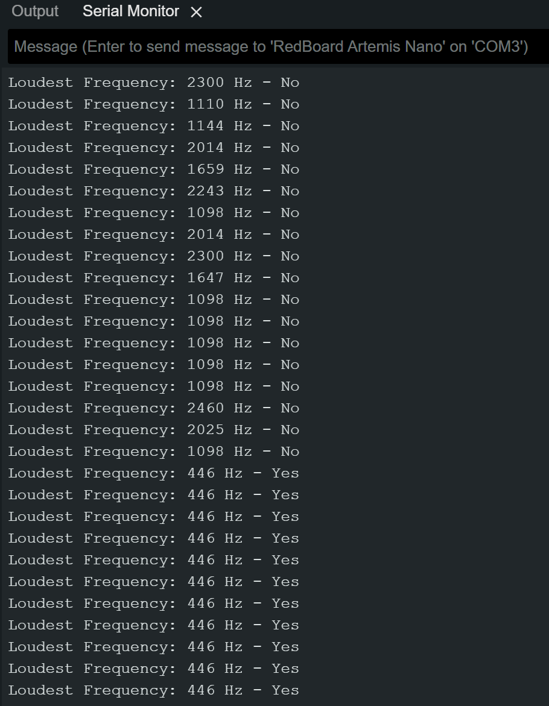

ECE 5160 - Fast Robots (2024SP)
Author: Yunxuan Xu (NetID: yx595)
About Me

I am a current M.Eng. student in ECE at Cornell Univerity. I received me B.S. in Physics and B.A. in Math from Case Western Reserve University. I am interested in semiconductor physics, nanofabrication and VLSI.
Lab 1: The Artemis board and Bluetooth
Part I: Examples on the Artemis Board
Objectives
The primary goal of this lab was to establish a foundational understanding and hands-on experience with the SparkFun RedBoard Artemis Nano through a series of tasks.
1. “Example_Blink”
In this part of the lab, the 'Blink' sketch was uploaded to the SparkFun RedBoard Artemis Nano. The onboard LED was programmed to alternate between on and off states. A shown in the video, the blinking blue LED blink with 1 second delay
2. "Example4_Serial"
In this example, we interacted with the Serial Monitor functionality in the Arduino IDE. As seen in the screenshot, the Serial Monitor first outputs a sequence of printed messages confirming the printf capability of the board. Then it allows serial communication by sending string messages to the console and echoing back any user input. When I send message “Send back: Hello”, the monitor echo back the same message.

3. "Example2_analogRead"
In this example, we will explore the Artemis Nano's temperature sensing capabilities. The temperature on the chip will be detected and printed in the second column in the Serial Monitor, as shown in the video. Initially, the temperature is about 32764 (32.764 Celsius). The temperature readings increase to ~33244 (33.244 Celsius) when a finger is placed on the chip, indicating heat transfer, and decrease to ~32900 (32.9 Celsius) when blown upon, showcasing the sensor's responsiveness to temperature variations.
4. "Example1_MicrophoneOutput"
In this part, the Example1_MicrophoneOutput script processes audio input to identify the loudest frequency component using FFT, with the results displayed in real-time via the Serial Monitor. The video dynamically showcases the microphone's ability to detect and respond to frequency changes produced by a frequency generator app. The frequency generated by the phone are 400Hz, 1000Hz and 900 Hz, while the result shows there is a bias about 7Hz.
5. "5000 Level: LED Response to Musical 'A' Note"
The task uses the microphone to detect sound frequencies and activate an LED when the musical "A" note (440 Hz) is identified. The screenshot confirms the Serial Monitor’s output, where frequencies near 440 Hz trigger a "Yes" response. A tolerance of 10 Hz accommodates minor deviations, accounting for a slight bias previously noted. The video shows the LED activation when a ~440 Hz tone is generated by a frequency generator.

Part II: Bluetooth Connection
Objectives
Lab 2: IMU
Content for Lab 2...
Lab 3
Content for Lab 3...
Lab 4
Content for Lab 4...
Lab 5
Content for Lab 5...
Lab 6
Content for Lab 6...